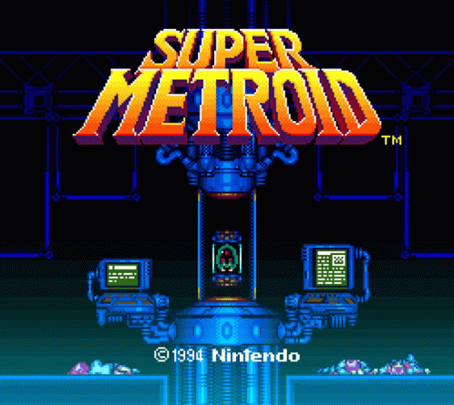
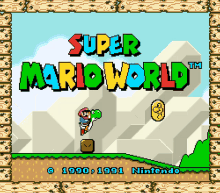
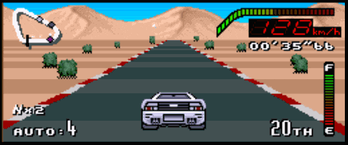

// SISTEMA INICIADO — CARGANDO DATOS
Los Juegos que Definieron una Era
Super Nintendo Entertainment System. 1990–1997. Una consola, millones de memorias. Explora los títulos que marcaron la historia del gaming.
INICIAR EXPLORACIÓNSuper Metroid
SNES — 1994
Considerado por muchos el mejor juego de todos los tiempos, Super Metroid sigue a la cazarrecompensas espacial Samus Aran en su regreso al Planeta Zebes para recuperar al último Metroid capturado por el Space Pirate Ridley.
El juego perfeccionó el diseño de mundo abierto interconectado, la exploración no lineal y la narrativa ambiental — conceptos que siguen influyendo en el desarrollo de videojuegos tres décadas después.
// CARACTERÍSTICAS CLAVE
- ▸ Mundo interconectado con más de 100 habitaciones
- ▸ Sistema de mejoras progresivas (Power Ups)
- ▸ Banda sonora atmosférica de Kenji Yamamoto
- ▸ Múltiples finales según tiempo de completado
- ▸ Definió el género "Metroidvania"
"The last Metroid is in captivity. The galaxy is at peace..."
— Super Metroid, Intro (1994)
Super Mario World
SNES — 1990
Juego de lanzamiento de la SNES, Super Mario World llevó la fórmula de plataformas de Mario a nuevas alturas con el icónico dinosaurio Yoshi, mundos secretos y un mapa de niveles interconectado.
Con 96 salidas (niveles) distribuidas en 9 mundos, el juego ofreció una profundidad sin precedentes en el género de plataformas, siendo el título más vendido de la SNES con más de 20 millones de copias.
// CARACTERÍSTICAS CLAVE
- ★ 96 salidas en 9 mundos temáticos
- ★ Introducción de Yoshi como montura
- ★ Capa de vuelo (Yoshi's Island)
- ★ Mundos secretos: Star Road y Special
- ★ Modo cooperativo a 2 jugadores
"Welcome! to Dinosaur Land. Mario's biggest adventure EVER!"
— Super Mario World, Caja del juego (1990)
Top Gear
SNES — 1992
Top Gear fue uno de los juegos de carreras más adictivos de la SNES, con circuitos en 32 países del mundo, 4 autos seleccionables con distintas características y el memorable sistema de nitro que podía cambiar una carrera en el último segundo.
Su banda sonora compuesta por Barry Leitch se convirtió en una de las más icónicas de la era de 16 bits, y el juego ofreció un modo de 2 jugadores en pantalla dividida que lo hizo favorito en partidas entre amigos.
// CARACTERÍSTICAS CLAVE
- ⚡ 32 países con circuitos únicos
- ⚡ 4 autos con estadísticas diferentes
- ⚡ Sistema de nitro estratégico
- ⚡ Modo 2 jugadores (pantalla dividida)
- ⚡ OST icónica de Barry Leitch
"Race through 32 countries. Choose your machine. Use your nitro wisely."
— Top Gear, Manual del jugador (1992)
Contacto
TRANSMISIÓN DE DATOS$ ¿Tienes memorias, datos o información sobre estos títulos? ¿Quieres compartir tu puntuación más alta? Envíanos un mensaje.